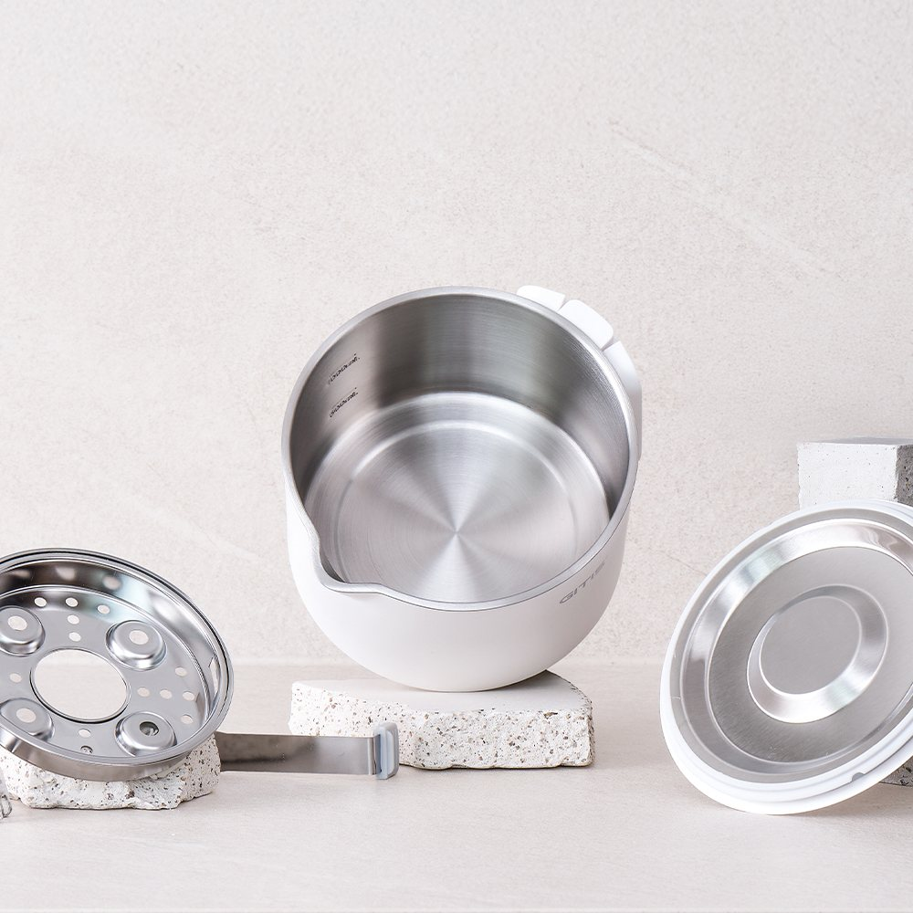
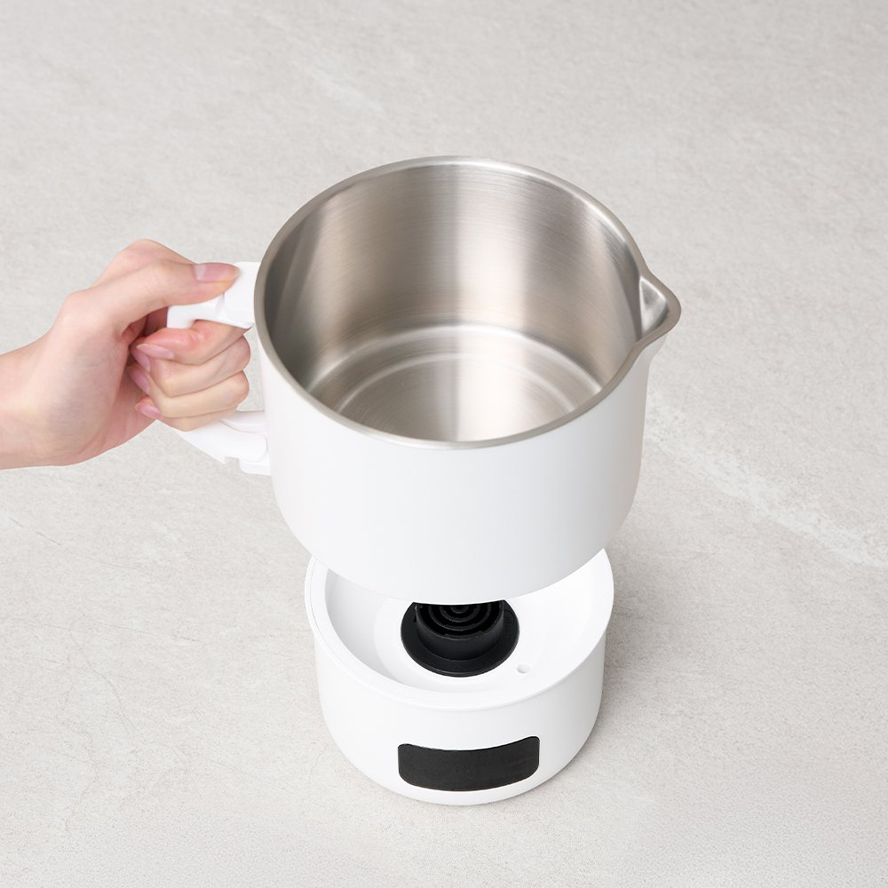
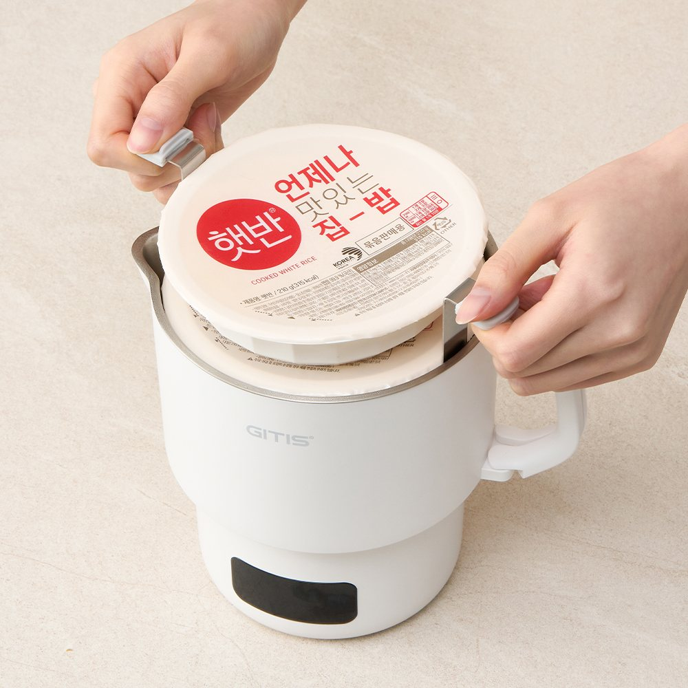
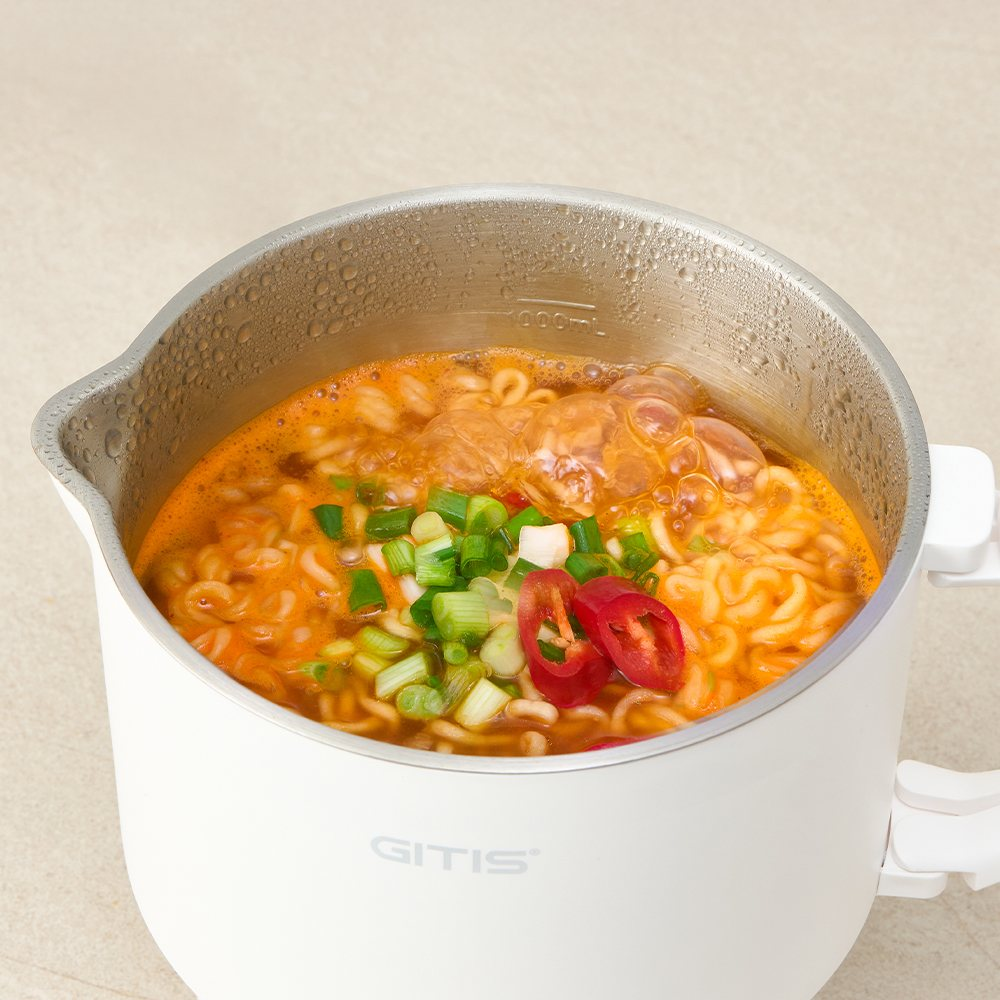

GITIS Folding Travel Kettle Review at a Glance
This GITIS all-stainless folding travel kettle review looks at the GT-037KR, a compact electric pot from Korean small-appliance brand GITIS (지티스). It's sold in Korea for travel, camping and baby-formula duty, and works more like a mini multi-cooker than a plain kettle: you can boil water, warm instant rice on top and cook a single pack of ramen inside.
We looked at it the way a traveler would: how much bag space it takes, what the inner pot is made of and what it handles in a hotel room.

Design: All-Stainless Pot, Detachable Base, Steamer Rack
The photos show a bare stainless-steel inner pot (the listing says all-stainless / 올스텐), a white outer body with a fold-flat handle, a separate heating base with a digital display, and accessories including a stainless steamer rack and stainless lid.


How to Use It on a Trip
- Morning coffee or tea: Boil a mug or two of water without using the hotel's kettle.
- Instant rice: The listing photos show a microwavable rice bowl warming on top (steam method).
- One-pack ramen: Cook noodles in the pot and eat straight from it.
- Baby formula water: One of the main uses on the Korean listing.
- Pack: Fold the handle, nest the accessories inside and slide it into a suitcase side pocket.


Key Details
| Item | Details |
|---|---|
| Brand | GITIS (지티스), Korea |
| Model | GT-037KR |
| Type | Folding travel electric kettle / mini cooker |
| Inner pot | All-stainless (per listing) |
| Base | Detachable heating base with digital display |
| Accessories | Steamer rack, stainless lid (per photos) |
| Power | Korean-market model — check rating plate (Korea 220V) |
| KR price seen | About ₩59,300 on the Korean listing (varies) |
| US Amazon | Exact model varies — similar-kettle search link |
Photo note: Real product photos from the Korean shopping-connect listing (some packaging has Korean text). No AI images, blur or mosaic. We don't list capacity or wattage figures we couldn't verify — check the box.
Travel Kettle vs. Hotel Kettle vs. Full-Size Kettle
| GITIS GT-037KR | Hotel Room Kettle | Full-Size Home Kettle | |
|---|---|---|---|
| Inner material | Bare stainless | Unknown / shared | Varies |
| Cooks ramen? | Yes (per photos) | Not intended | Not intended |
| Bag space | Compact, handle folds | None needed | Too bulky |
| Best for | Travel, camping, baby care | Quick tea | Home only |
Pros & Cons
✅ Pros
- Stainless inner pot — no coating to worry about.
- Doubles as a mini cooker for ramen and rice.
- Detachable base makes pouring and cleaning easier.
- Compact, suitcase-friendly shape.
⚠️ Cons
- Korean 220V model — check voltage before use abroad.
- Small capacity: one person, one meal at a time.
- Exact model rarely on US Amazon.
- Never leave it unattended while cooking.
Who It Suits (and Who Should Skip It)
- Great for: Travelers who don't trust hotel kettles.
- Great for: Parents who need clean hot water for formula on trips.
- Great for: Campers and solo travelers who live on ramen and instant rice.
- Maybe skip: If you need to boil a lot of water at once, or you'll use it mainly on 120V without a proper converter.
GITIS GT-037KR FAQ
What is the GITIS GT-037KR?
It's a compact electric travel kettle from Korean small-appliance brand GITIS (지티스). The Korean listing describes it as all-stainless, foldable and portable, for baby formula water, coffee, instant rice and ramen.
Is the inside really stainless steel?
Yes, the listing calls it all-stainless (올스텐), and the product photos show a bare stainless inner pot rather than a coated one.
Can I cook ramen in it?
The product photos show ramen cooked in the pot and a steamer insert for warming food. Keep to the max fill line and never leave it unattended.
Will it work in the US?
The GT-037KR is a Korean-market model. Korea uses 220V, so check the rating plate before using it on 120V outlets. A step-down adapter alone isn't always enough for heating appliances.
Can I buy it on Amazon?
This exact Korean model isn't reliably listed on US Amazon, so we link a search for similar collapsible stainless travel kettles.
Similar Collapsible Stainless Travel Kettles
The exact GITIS GT-037KR isn't always on US Amazon, so here are similar stainless folding travel kettles.